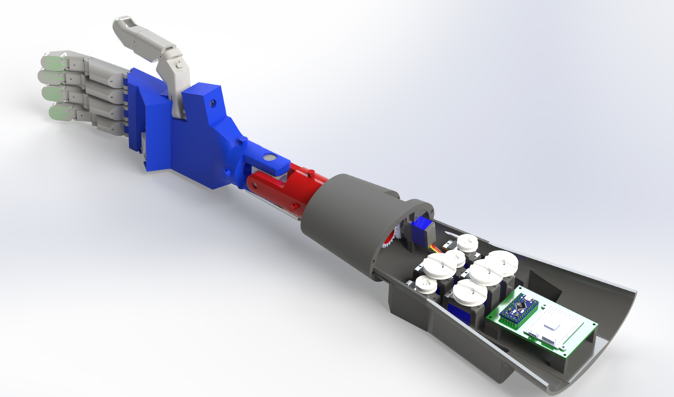

Lucas Cho
Welcome to my engineering portfolio. Explore the projects below to learn more about my work.
Welcome to my engineering portfolio. Explore the projects below to learn more about my work.
A deep dive into the design, development, and implementation of my senior capstone engineering project.

This project was a collaborative effort with a team of engineers to design and build a highly functional prosthetic hand—intentionally avoiding invasive technologies like brain implants or neural grafting within the budget of < $1200. We leveraged tools such as CAD, microcontrollers, reasearch, manufacturing and data analysis to validate our design. The system incorporated a Portenta camera running a trained AI model in Python, along with custom silicone and liquid metal sensor arrays, resulting in a responsive and practical prosthetic solution.
As the Electronics Team Lead, I was primarily responsible for the design, fabrication, and testing of the silicone and liquid metal sensor arrays, which were central to the prosthetic’s functionality. I also led the development of a custom spin coater to ensure consistent sensor production. In collaboration with the mechanical team, I integrated both the sensor arrays and the Portenta camera into the prosthetic hand. While overseeing the development of the AI model used with the camera, I contributed to its training and integration into the control system. Additionally, I implemented PID control systems that used real-time data from both the sensors and camera to drive precise, responsive movements.
I've developed force-resistive sensors that utilize a silicone-based elastomer embedded with microchannels filled with Galinstan, a liquid metal alloy. These channels form a conductive network whose electrical resistance changes in response to applied pressure, functioning similarly to traditional strain gauges. These sensors were made of silicone and placed onto the fingertips of the prosthetic hand to mimic the mechanoreceptors of a real finger.


(Dimensions in inches)

Using a derived form of Ohm’s law, I calculated strain-dependent changes in resistivity to engineer tailored electrical responses across different sensors. By varying both the cross-sectional area and the number of conductive loops, I created distinguishable behaviors between the top and bottom rows of sensors due to how pressing a bottom sensor will trigger the other three sensors. With distinguished cross-sections, I was able to showcase eash effect that pressing a sensor had on the other three.

To optimize wiring and minimize hardware complexity, I implemented a row-column scanning method, enabling the control of the sensor array using just two inputs and two outputs. By rapidly pulsing rows on and off, I achieved efficient sensor activation and readout. This approach also allows for future scalability using a multiplexer (MUX) to support larger sensor networks.

The fabrication process involved creating silicone sheets cast over 3D-printed ABS circuit patterns. Once cured, the silicone was submerged in acetone to dissolve the ABS, leaving behind embedded channel structures. After sufficient dissolution and flushing, Galinstan was injected into the channels using a syringe, and the ends were sealed with wires and silicone adhesive to form functional liquid metal sensors.

One approach we explored for sensor fabrication involved designing a controlled spin coater, which utilized centrifugal force to produce uniform silicone layers. By adjusting the spin speed, we were able to precisely control the thickness of each layer.

A preliminary method for fabricating uniform silicone layers involved using a precision blade coater to evenly spread the material into thin sheets, followed by curing with a heat gun to achieve consistent thickness and flexibility.

An aluminum mold was fabricated using CNC machining to enable precise and repeatable production of silicone samples. This method serves as the intended manufacturing approach for scaled production once the optimal sensor design is finalized.

To calibrate each sensor individually within the 2×2 array, I designed a custom test bed using a stepper motor and a load cell to apply precise, controlled forces to each sensing element. This setup also allowed us to observe cross-sensitivity effects, enabling a deeper understanding of how one sensor’s response could influence neighboring sensors.

The stretchable electronic sensor used in this project is designed to detect both the angle at which the fingers contact a surface and the amount of force applied. Each finger is equipped with four individual sensors, enabling detailed feedback. When force is applied at an angle, these sensors provide readings indicating both the specific points of contact and the magnitude of force. Utilizing PID control methods, the prosthetic grip will slightly open and adjust the wrist position counterclockwise, specifically tailored for a right-hand prosthetic. If sensor readings indicate increasing force when rotating clockwise, the system responds by rotating the wrist counterclockwise. Following this adjustment, the grip closes, and sensor data is reassessed. This iterative process continues until the average sensor data stabilizes within the defined acceptable range. When sensor readings equalize, it indicates that all sensors are uniformly in contact with the object's surface, achieving an effective and secure grip.
The mechanical development of the prosthetic hand was led by Noah Tuitavuki, with support from David Rico and Michael Huang. The team focused on improving the wrist’s functionality by increasing its Degrees of Freedom (DOF) from 1 to 3 compared to the previous year’s design. A string pulley system was used to efficiently actuate both the fingers and wrist, enhancing the prosthetic’s range of motion and dexterity


For the wrist mechanism options, we designed two different approaches. The first is a U-joint design, where the wrist movement is controlled by string-driven pulleys that pull the wrist downward. It returns to its initial position through two springs placed on either side of the joint. The second option is a monopole gear mechanism, utilizing a motor-driven gear to actuate an internal worm gear and differential gear assembly, providing the wrist with three degrees of freedom (3 DOF).

The updated wrist design integrates parallel linkages and a tendon routing system that preserves alignment under torque. Special care was taken to reduce backlash and minimize friction at joints, ensuring a smooth range of motion during grasping and release.

The wrist mechanism utilizes a monopole sphere gear design, where movement is driven by a motor-actuated internal worm gear combined with a differential gear assembly. Currently, this design achieves two degrees of freedom (2 DOF). However, with the integration of a fully spherical monopole gear and two distinct actuation points, the wrist mechanism can potentially achieve the full three degrees of freedom (3 DOF). One of the main flaws of this design is the difficulties of having wires from the Portenta board to the main controller
The mechanism includes a wrist-swapping feature, allowing for fluid testing of different joint configurations without needing additional parts or separate arms for each wrist design.

The fully assemebled design of the prosthetic hand utilizes a Portenta board for the ai camera, a arduino nano to read the sensors with a Raspberry Pi has a maincontroller to adjust the servos. However, for the sake of team seperation and simiplicity the current design uses a nano to control the servos, PYBv1.1 to maintain and test sensor feedback, the portenta to develop the AI camera, and an external Raspberry Pi to control the arm.
We mounted a Portenta H7–powered camera within the palm to run an ultra-compact vision pipeline entirely on-device. Each 96×96 grayscale frame is pushed through four fixed preprocessing filters (auto-contrast, horizontal & vertical Sobel, local contrast) to normalize lighting and highlight edges, then into a tiny CNN feature extractor, and finally through a 64-unit regression head. The full model is only ~254 K parameters (~200 KB after quantization) and delivers sub-20 ms inference at 30 FPS—letting the prosthetic adjust its grip in real time without any external compute.

The Portenta H7 sports dual ARM Cortex®-M7/M4 cores plus Wi-Fi/Bluetooth and hardware TensorFlow-Lite support. We leverage its M7 for preprocessing and the M4 for inference, achieving a tight 15 ms per frame latency while keeping power usage under 200 mW.

1) **Preprocessing**: Auto-contrast & Sobel gradients + learnable local contrast → 5-channel 96×96 tensor
2) **Feature Extractor**: Four Conv2D+ReLU blocks with pooling → flattened 3 872-dim vector (~6.5 K params)
3) **Regression Head**: Dense(64)+ReLU → Dropout → Dense(1) (~248 K params)
4) **Control Loop**: Output drives PID on grip/flex motors; cycle repeats until sensor feedback stabilizes.

We compared running our TinyML pipeline in MicroPython on the Portenta (≈15 ms/frame) against a cloud approach (MQTT+REST, ≈120 ms round-trip). On-device wins on latency, reliability, and offline operation, with no network dependency.

We gathered ~5 000 labeled hand-object images under varied lighting, trained our custom CNN end-to-end in Python (TensorFlow), then applied pruning & quantization to fit the final ~200 KB TFLite model. This preserves accuracy while meeting the Portenta’s flash and RAM constraints.
Although the project did not achieve complete success, significant milestones were accomplished that we are proud to highlight.
I was unable to claibrate the sensors using the test bed due to the stepper motor not shipping in time, I was still able to roughly adjust the sensors using calibrated weights. In the showcase the plot of the live feedback between each of the sensor.
By taking an average value of all the values from the sensors, we can determine an angled force on the grid of sensors. As the cup presses against the silicone at an angle, we notice a jump within the average sensor values. However, once the cup equalizes the pressure on the grid, the values come back to zero. This can be ultized to adjust the grip based on an angled pressure on the fingertips of the arm.

The spin coater produced silicone layers with ±2 mm thickness variation. With adjustable speeds, presets were made to make repeatable sheets of silicone at varying thicknesses.
Our TinyML model correctly identified object orientation over 90% of the time at 30 FPS. The prosthetic uses this real-time angle data to adjust wrist position before gripping.
The U-joint mechanism delivered smooth flexion/extension across a 0–45° range with minimal backlash (<3°). Its spring-return design reliably reset to neutral between grips.
The monopole gear setup achieved two degrees of freedom but due to the 3D printed gears and the lack of a shaft collar, the motor began to stall and showed gears slipped. However, in the future, creating the gears using a cnc or injection molding will be most optimal.
In the fully assembled prosthetic, the arm was unable to simultaneously actuate all nine servos due to battery limitations. Despite this challenge, each team achieved remarkable results within their respective areas. Overall, this project served as a valuable learning experience in team leadership and navigating technologies beyond our initial expertise.
For this design challenge, we were all given a standard set of magnets, PLA, shaft, and bearings. The competition required us to design our own generator in any way we wanted. For this competition, we standardized the generator to fit in the 1'x 1' wind tunnel with a standardized blade profile. The competition was based on the 1W cut in speed, the power generated at 8 m/s and 10 m/s.
The goal of my design was to create the most compact generator minimizing the usages of PLA and creating the most power. I have decided to go with a 8 pole 9 tooth radial flux generator using the wye winding technique.
We began by modeling power output vs. wind speed using Betz’s law and blade element momentum theory. Our MATLAB scripts predicted peak efficiency at 8 m/s and a cut-in speed of 2 m/s.
Poles: 8 | Teeth: 9 | Tooth Length: 0.6" | Radial Depth: 0.2" | Windings: 200
From Faraday’s law for a rotating coil, the peak emf is:
where:
\(N\) = turns per coil | \(B\) = flux density (Tesla) | \(A\) = coil area (m2) | \(\omega\) = angular speed (rad/s)
These calculations are the expected maximum voltage outputs that we can expect from the realized version of this generator. So, in theory, I expected my generator to induce a total of 11.16V.
Below are the CAD models and drawing sheets made in SolidWorks and Inventor

This full-assembly CAD rendering shows how the generator will come together and was designed to be 3D-printed.

Sheet 1 details the shell of the generator. The inner diameter was minimized due to the large factor in the power produced from the generator. This is due to the fact that the stator coils will induce a higher voltage when close to the strongest part of the magnetic field. However, ensuring that the coils do not disturb the motion of the rotor was a key design factor. The shell is designed to have sliding slots that are slight interference fit to allow the stator teeth to stay firmly inside the shell but also allow them to be replaceable as needed.

Sheet 2 shows the design of the stator teeth that will be placed into the slots of the shell. These teeth have a holder for a power drill to allow for ease of winding for the copper coils. These poles are made to be easily removable with a knife and sandpaper so that each tooth can fit into the slots. The teeth when placed into the shell will create a full circle with spacing between each tooth to account for the flexing of the PLA when wrapping the coils. These coils are designed to take 200 windings and were designed to maximize the amount of windings while minimizing the distance to the stator.

Sheet 3 outlines the design of the rotor. This rotor holds 8 magnets with alternating North and South hence the 8 pole rotor. The alternation between North and South of the magnets creates a changing magnetic field which is the key to inducing voltage to our generator. The design of the rotor was also minimized with the space between each magnet but ensuring the rotor walls did not collapse from the strength of the magnets. This ensures minimal flux leakage and cogging torque that may occur.

Sheet 4 outlines the design of the covers that will be on the shell. The design of the covers were made as extra cooling for the stator coils to prevent overheating within the coils generated from the I2R power formula keeping the copper wires within their insulation ratings.
The generator was fabricated from individual CAD-designed components printed on a Prusa MK3 in PLA, then assembled into a fully functional unit. This build provided invaluable hands-on feedback: print orientation and speed settings had to be balanced against the mechanical requirements of each part, PLA’s dimensional shrinkage demanded tighter tolerances on the stator to rotor clearance, and the expanding stator teeth occasionally interfered with the rotor’s smooth rotation. During assembly, one notable challenge arose when the shell printed too flexibly, compromising the structural integrity of the outer casing. With limited printer capacity and project time constraints preventing a quick reprint at an enlarged diameter, a practical field fix was devised: thinly applied epoxy coating around the shell halves stiffened the PLA just enough to restore rigidity without obscuring critical clearances. Overall, this project underscored the iterative nature of rapid-prototyping and the comparison of my flawless digital designs to reality. Moving forward, I plan to adjust shell dimensions for greater stiffness, optimize print settings for dimensional accuracy, and incorporate even finer clearance adjustments between stator teeth and rotor magnets.
Enjoy the short video of my generator competing in the 8 m/s windspeed.
Overall, my generator achieved a cut in speed of 3.68 m/s and produced 10.52 W at 8 m/s and 17.83 W at 10 m/s on a resistive load bank. In the competition across both engineering classes combined it placed third. Despite relying on minimal test prints and using as little PLA as possible, I was pleasantly surprised by its performance. The measured voltage output even exceeded my theoretical prediction, delivering 11.95 V versus the expected 11.16 V. I suspect this was because I ended up with slightly more than the intended 200 coils due to a counting error. This competition was a phenomenal learning experience and a memory I’ll always cherish.
I began by selecting target speeds and power which were 1,750 RPM at 15 HP in, and 85 RPM out. I decided to go with compound-reverted gear train with identical stage reductions [GIVE REASONING]. Using catalog gears for an initial layout, I picked a matching motor, keyway, and retaining rings. Next, I calculated forces and torques through each gear pair to the intermediate shaft, determined maximum bending moments in the principal planes, and checked the initial shaft diameter. Finding stresses and deflections out of spec, I increased the diameter, re-evaluated factors of safety (keyway FOS ≈ 2.5) and deflection, and converged on a final shaft size. Finally, I set bearing spacing, modeled the assembly in SOLIDWORKS, and ran FEA to verify the design.
Mathematical Calcluations to
Input and Output RPM/HP:
$$ \begin{aligned} \omega_\text{in} &= 1750, & P_\text{in} &= 15,\\ \omega_\text{out} &= 85. \end{aligned} $$
Overall gear ratio:
$$ e = \frac{\omega_\text{out}}{\omega_\text{in}} = \frac{85}{1750} = 0.04857, \quad e = \frac{1}{20.59} = \frac{N_2 N_4}{N_3 N_5}. $$
Identical stage reductions (compound-reverted):
$$ \frac{N_2}{N_3} = \frac{N_4}{N_5}, \quad e = \Bigl(\tfrac{N_2}{N_3}\Bigr)^2 \;\Longrightarrow\; \frac{N_2}{N_3} = \sqrt{e} = \tfrac{1}{4.54}. $$
Teeth count (Lewis formula):
$$ m = 4.54,\; \phi = 20^\circ,\; k = 1,\\ N_p = \frac{2k}{(1+2m)\sin^2\phi} \Bigl(m + \sqrt{m^2+(1+2m)\sin^2\phi}\Bigr) \approx 15.6 \approx 16,\\ N_2 = N_4 = 16, \quad N_3 = N_5 = N_p\,m \approx 72. $$
Speed check:
$$ \omega_\text{out} = \Bigl(\tfrac{16}{72}\Bigr)^2 \cdot 1750 \approx 86.42\;\text{RPM} \quad(\text{vs.\ }85\;\text{RPM}). $$
Torque:
$$ T_2 = \frac{P}{\omega_\text{in}} \times \frac{550}{2\pi} \times 60 \approx 45\;\mathrm{lbf\cdot ft},\\ T_3 = T_4 = 45\frac{1750}{388.9}\approx202, \quad T_5 = 45\frac{1750}{86.42}\approx911.2\;\mathrm{lbf\cdot ft}. $$
Force components:
$$ F_t = \frac{2T}{d}, \quad F_n = F_t \tan\phi, \\ F_{t2}=F_{t3}\approx270\;\mathrm{lbf}, \quad F_{t4}=F_{t5}\approx1214.9\;\mathrm{lbf}, \\ F_{n2}=F_{n3}\approx98.3\;\mathrm{lbf}, \quad F_{n4}=F_{n5}\approx442.2\;\mathrm{lbf}. $$
Max bending moment:
$$ M_{y,\max}=1180.5, \quad M_{z,\max}=-2600.9,\\ M_\max = \sqrt{1180.5^2 + (-2600.9)^2} \approx 3511.7\;\mathrm{lb\cdot in}. $$
Cylindrical roller bearing C₁₀ rating:
$$ C_{10} = F_D \Bigl(\frac{L_D n_D 60}{10^6}\Bigr)^{1/3}, \; L_D = 10{,}000,\; n_D \approx 29.17,\\ C_{10(1)}\approx14.11,\; C_{10(2)}\approx21.87, \; \text{required } \ge 28.6, \; \text{selected bore }=25\;\mathrm{mm}. $$